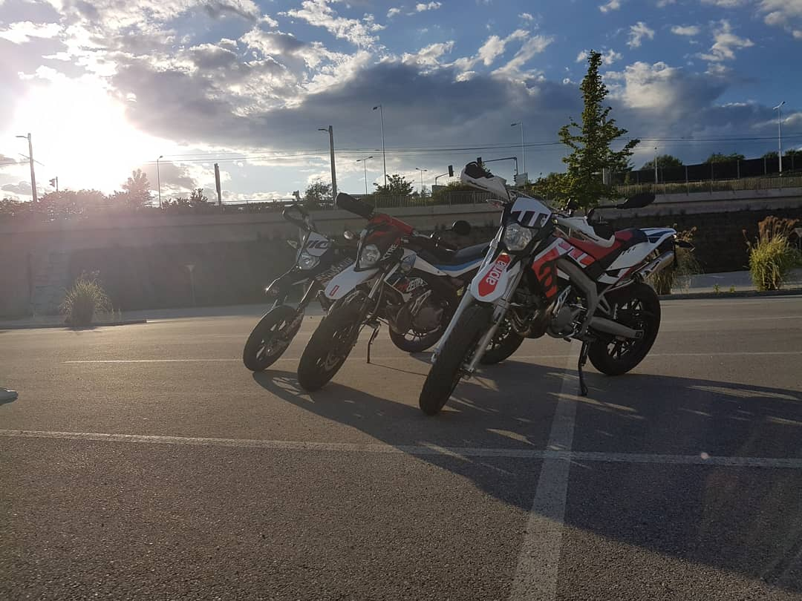
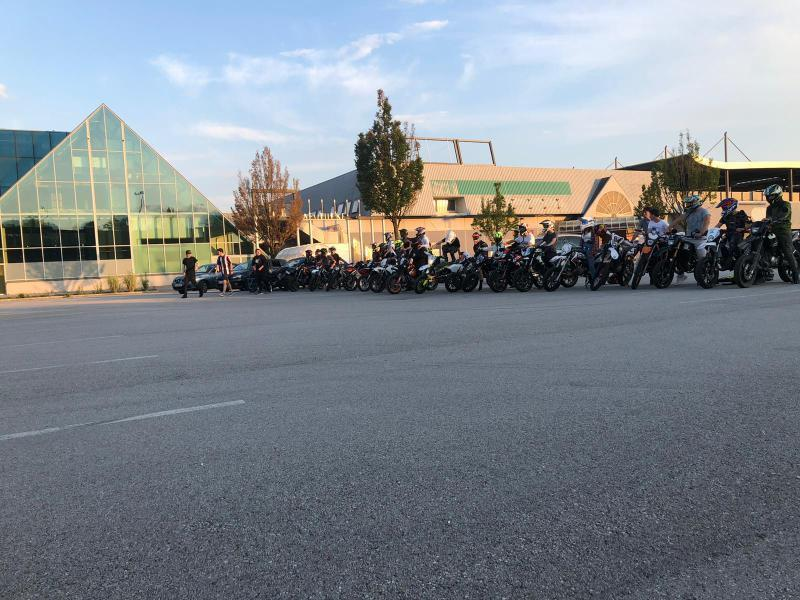

Einen neuen besten Freund
An diesem Tag, habe ich mich spontan mit einem Jungen getroffen den ich davor einmal gesehen habe. Ich habe mir zwar gedacht das es lustig zu dritt wird da mein bester Freund auch mitkommt, aber das er dann innerhalb solch einer kurzen Zeit zu einem meiner besten Freunden zählt hätte ich nicht gedacht.

Das große spontane Treffen
Hier sieht man auf den Bild eine riesige Gruppe von Moped, 125, 500 und auch Autofahrern. Das ist Fear26Linz (und nein den Namen habe nicht ich mir ausgedacht). In dieser Gruppe sind Leute aus Linz, Leonding, Traun, Marchtrenk,.... Mitlerweile sind es sogar schon mehr als auf diesem Bild.